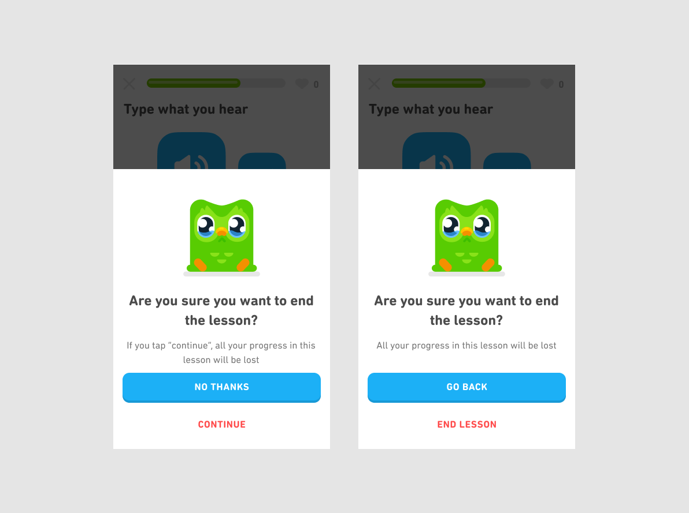

“I would have written a shorter letter, but I did not have the time.”
– Blaise Pascal
Well-written copy plays a key role in making things easy to use. Copy should be concise and clear, allowing users to grasp meaning quickly and without confusion. At Duolingo, we always take care to avoid technical vocabulary and long blocks of text. This reduces cognitive load by minimizing the amount of information users need to process.
Consider these two messages for quitting a session. Which one is less ambiguous? Which one requires the least effort to understand?
